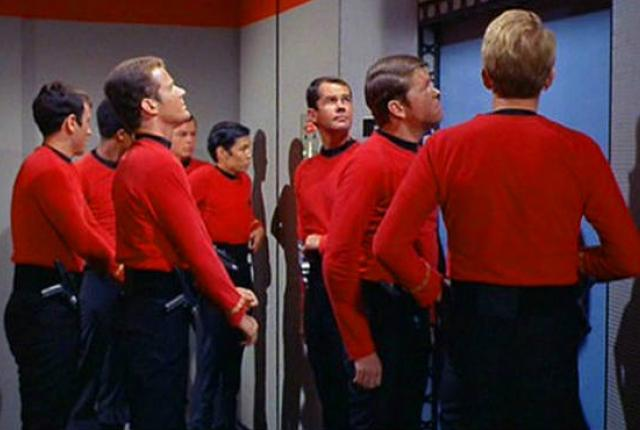

Redshirts and Ration Packs
Federation runabout Make Shit Up crash lands on a seemingly barren Class M planet. The crew of ten - all Redshirts* - unbelievably survives. They spend the day pulling food ration packs from the wreckage and gathering them into a pile. Weary from their eventful day, they decide to sleep the night and divide the rations equally in the morning.
During the night, one of the Redshirts wakes up hungry and attempts to claim his fair share of the rations before everybody else wakes up. He counts out the ration packs, but finds he's one pack short of ten equal piles. It's then that he notices a small, doe-eyed, furry creature with an oversized grin and a single ration pack clutched in its undersized limbs. The Redshirt attempts to take the missing pack, but the creature swiftly leaps up and consumes the crewman's head in one bite.
Perhaps awakened by the *thump* of the fallen body, another Redshirt rises hungry. Approaching the ration pile, he discovers the headless body of the first Redshirt. Unconcerned - this sort of thing happens all the time, after all - he commences to recount the ration packs, but finds that he's one pack shy of nine equal piles. It's then that he notices the creature with the ration pack. He tries to take the pack. The creature eats the crewman's head.
One after another, each of the remaining Redshirts goes through the same process - each time counting one pack too few to make even piles for the dwindling number of survivors - until finally the tenth, well-rested Redshirt wakes and finds a pile of bodies and a pile of ration packs, which he now has all to himself.
What is the smallest possible number of packs in the ration pile?
* "Redshirts" is the collective term for the expendable Star Trek characters who die within the first 90 seconds of beaming down to or landing on the surface of any planet in any episode.